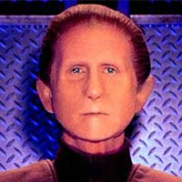
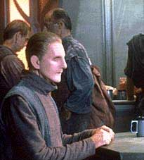
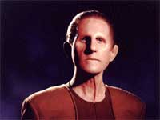
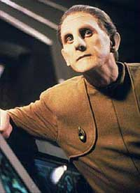
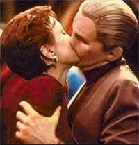
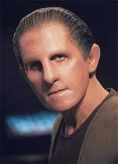

|
Odo
(apelido derivado da palavra Cardassiana Odo'Ital)
 Espécie:
Transmorfo (da mesma espécie dos Fundadores do Dominion que formam o Grande Elo)
Nascimento: Descoberto aparentemente antes de 2356 no Cinturão Denórios, Sistema Bajoriano. Sabe-se que nasceu no Mundo Natal dos Fundadores, no Quadrante Gama, em data desconhecida.
Posição: Espécime para pesquisa no Instituto Bajoriano para Ciência de 2356 a 2363; Oficial Chefe de Segurança da Estação Cardassiana Terok Nor de 2365 a 2369; Oficial Chefe de Segurança da Estação Bajoriana Deep Space Nine de 2369 a 2375.
Paradeiro: Retornou ao Grande Elo ao final de 2375, com o objetivo de curar o seu povo da praga engendrada pela Seção31 e ensinar aos demais Fundadores sobre sua experiência com os sólidos de forma a impedir novas guerras no futuro. Sua decisão salvou incontáveis vidas na batalha final da guerra do Dominion na capital
Cardassiana.
Laços
familiares e afetivos
Família: Considerado parte do Grande Elo; O cientista Bajoriano Dr. Mora Pol foi uma figura paterna de referência em sua formação.
Esposa: Lwaxana Troi, por poucos meses no ano de 2372 (o casamento foi anulado)
Relacionamentos amorosos: Arissa (2373) e Kira Nerys (2374-2375).
Maiores amigos: Kira Nerys, Garak e alguns oficiais Bajorianos. Seu relacionamento com Quark é de difícil definição. Muito grato ao cantor holográfico Vic Fontaine pela ajuda dele com relação a
Kira.
Curiosidades
Odo é conhecido por seu gosto por literatura policial e estórias de detetives, mas certa vez foi pego lendo um romance por Quark. Tinha o costume de navegar de caiaque na Holosuite com o Chefe O’Brien e possuía algum interesse pelo estilo musical chamado de Jazz.
Odo é um adepto da leitura da linguagem corporal e nunca carregou armas, mesmo isto sendo parte de seu trabalho.
A cada ciclo de 16-18 horas, Odo precisa voltar ao seu estado natural líquido-viscoso para regenerar sua força vital.
Durante anos, Odo não possuía um alojamento, utilizando apenas um balde em seu escritório para descanso. Em 2371 (após descobrir sobre a sua origem no Grande Elo) ele passou a ocupar um alojamento, repleto de formas onde ele poderia exercitar as suas habilidades metamórficas. Seu balde acabou virando um vaso de flores que ele deu a Kira como lembrança pouco antes de retornar ao seu povo ao final de 2375.
Durante o período em que foi humano (após ser julgado pelo Grande Elo ao final de 2372), seu tipo sanguíneo era O-negativo.
Odo nunca aprendeu a jogar coisa alguma e também não se mostra muito receptivo à ópera
Klingon.
Biografia
Pouco tempo depois de ser formado (data desconhecida), Odo foi separado do Grande Elo e enviado (sendo os detalhes de tal "envio" desconhecidos) pela galáxia como um dos 100 exploradores infantis, grupo de transmorfos que tinha a missão (implantada geneticamente) de explorar o universo e retornar algum dia ao seu planeta natal (Odo foi o primeiro destes a voltar ao lar no início de 2371). Nenhum dos "100" guardava qualquer informação sobre a sua origem.
De algum modo Odo atravessou a Fenda Espacial para o Quadrante Alfa e foi encontrado no Cinturão Denórios (especulação: aparentemente como uma mera massa gelatinosa), no Sistema Bajoriano pelos Cardassianos (detalhes desconhecidos). Alguns biógrafos apontam o ano de 2337 para a descoberta de Odo, mas ao mesmo tempo são incapazes de explicar o paradeiro do "infante Odo" entre 2337 e 2356.
Posteriormente, em 2356, foi levado até o Instituto Bajoriano para Ciência e entregue aos cuidados do Dr. Mora Pol, que sofreu forte pressão dos seus supervisores Cardassianos para obter resultados sobre a criatura (especulação: aparentemente Odo mostrou o suficiente de suas habilidades para levantar interesse dos Cardassianos, mas o seu entendimento estava muito além do alcançe deles). Ele estudou Odo, cuidou de sua educação e ajudou-o a se integrar à sociedade humanóide local (a socialização de Odo foi o mais difícil aspecto de sua formação). Foi neste período com Mora que Odo assumiu pela primeira vez a forma humanóide, usando como modelo a aparência do próprio Bajoriano, notadamente o seu cabelo.
O primeiro sinal de consciência que Mora teve de Odo, foi quando reparou que havia dois recipientes de análise sobre a bancada e Odo havia sumido.
Seu nome advém do rótulo do recipiente onde ele foi inicialmente colocado: Odo’Ital, palavra Cardassiana para "amostra desconhecida", ou literalmente "nada". Os cientistas Bajorianos fizeram uma brincadeira com o termo e começaram a se referir a ele como Odo Ital (como em um nome Bajoriano) e finalmente apenas Odo.
Em 2363, depois de ser a "atração principal" numa recepção para o Alto Comando Cardassiano (que incluiu militares como gul Dukat), sendo forçado a fazer apresentações humilhantes como a do famoso "truque do pescoço Cardassiano", Odo teve um desentendimento sério com o Dr. Mora e deixou o centro de pesquisa e a influência do cientista. Nos dois anos seguintes, construiu uma sólida reputação (aparentemente nas minas) como um "árbitro neutro" para resolver pequenas disputas entre Bajorianos.
 Em 2365 Odo chegou a estação Cardassiana de processamento de minério Terok Nor, intimado por Gul Dukat, o prefeito da estação, a investigar o assassinato de Vaatrick, um químico bajoriano que possuía uma loja no Promenade da estação; este foi seu primeiro caso criminal e durante a sua investigação encontrou pela primeira vez Quark e Kira. Foi um momento fundamental na sua vida.
Kira Nerys (então uma terrorista Bajoriana) foi a principal suspeita, mas Odo a deixou partir quando ela o convenceu de que estava em outro lugar cometendo um ato de sabotagem no momento do assassinato. Dukat ficou tão impressionado com a performance de Odo que o tornou Comissário Chefe da Segurança em Terok Nor (apesar de não confiar cegamente na definição de justiça de Odo e tomar certas medidas de segurança com relação ao comissário, como colocar um sofisticado sistema de campo de força em seu escritório, com alimnetação de força independente). Anos mais tarde (em 2370), Odo descobriu que foi Kira quem de fato matou Vaatrik, que era um colaborador para os Cardassianos.
Em 2366, Odo prendeu três Bajorianos - Timor, Ishan e Jillur - por causa de uma tentativa de assassinato a Gul Dukat. Depois que eles foram executados, Odo descobriu evidências de que eram inocentes. Ele lamentou profundamente este incidente, que provavelmente motivou sua dedicação à justiça acima das próprias leis, e em suas próprias palavras: "as leis mudam, mas justiça é justiça".
Em seguida foi apontado com um oficial da corte Cardassiana para testemunhar em casos criminosos, designação nunca revogada. Conheceu na epóca também Kubus (um infame colaborador) e Prylar Bek.
2369:
Odo permaneceu como chefe de segurança quando a Federação assumiu a estação, agora chamando-se Deep Space 9, em 2369, sob o comando de Sisko. Odo disse na época, ao seu novo oficial comandante, que pelo menos 500 pessoas teriam interesse em acusa-lo de assassinato.
Ainda neste ano, um contrabandista chamado Ibudan, que Odo já havia prendido anteriormente, foi achado morto numa holosuíte trancada e o comissário foi acusado do crime e hostilizado abertamente (e quase linchado) pelos residentes da estação, até que tudo foi descoberto como sendo um embuste de Ibudan, que queria se vingar de Odo (e para tanto matou o próprio clone e deixou evindências que colocavam alguém com as habilidades de Odo como principal suspeito).
Posteriormente, Odo foi tentado pela conversa de um prisioneiro alienígena chamado Croden, que afirmava saber onde outros transmorfos viviam. O comissário nunca acreditou totalmente nisto, mas acabou por deixar Croden escapar por causa da filha do ex-prisioneiro. Foi tudo uma estratégia de Croden (apesar do termo "transmorfo", usado por ele, ter se mostrado correto ao longo do tempo) para chegar até ela e liberta-la. Odo os deixou a bordo de uma nave Vulcana que deu uma carona a eles.
Odo sempre foi relutante em arranjar uma companheira, dizendo sempre que não queria o compromisso que um relacionamento demanda. Mas ainda em 2369, Odo teve uma experiência emocional interessante com a Embaixadora Betazóide Lwaxana Troi, quando os dois ficaram presos sozinhos num turbo elevador da estação. Às suas próprias maneiras, tanto Odo, como Troi eram solitários, e a proximidade forçada pela situação fez com que compartilhassem de suas vulnerabilidades.
Em seguida, como único oficial não afetado pela matriz telepática de Saltah'nah (que tomou o controle de seu companheiros revivendo uma antiga disputa pelo poder), ele conseguiu encontrar um modo de neutraliza-la e salvar os seus companheiros.
2370:
Em 2370, Odo foi obrigado a rever seu primeiro caso de assassinato por causa de um atentado contra a vida de Quark - o barman da estação - e este incidente tinha ligações com o crime do passado. Nesta ocasião, Odo descobriu que foi Kira Nerys a verdadeira pessoa que havia tirado a vida do Químico Vaatrick, e este fato acabou por abalar a amizade dos dois.
 Pouco tempo depois, Odo voltou a encontrar seu antigo mentor, o Dr. Mora, que havia descoberto um DNA similar ao seu no Quadrante Gama. Durante uma expedição no local da descoberta, Odo foi afetado por um gás vulcânico que fazia com que ele ficasse metamorfoseando descontroladamente. Tornado-se uma espécie de criatura fora de controle. Mas foi curado desta moléstia e finalmente se reconciliou com o Dr. Mora. Cabe salientar que quando Odo encontrou om planeta natal dos Fundadores no início do ano seguinte, ele encontrou um obelisco idêntico ao deste planeta. mostrando que a pista de Mora não era tão "fria" assim.
Ainda em 2370, Odo voltou ao Quadrante Gama, desta vez com Dax, a oficial de ciências da estação, e investigou misteriosos desaparecimentos numa vila. Posteriormente foi descoberto que a vila era formada por hologramas (recriação do mundo natal do único habitante de carne e osso do lugar) e Odo acabou por criar um vínculo de amizade com um destes hologramas, uma menina chamada Taya. Odo se despede da menina se transformando em um pião (tirando prazer da demonstração de suas habilidades). Nesta missão ele ouve novamente o termo "transmorfo".
No curso desta missão, Odo e Dax ouvem novamente o nome Dominion. Nome que já havia sido trazido a tona por duas vezes neste anos de 2370. Quando os Ferengis estabeleceram uma franquia de bebida com os Karema e quando os refugiados Skreeans chegaram a DS9 vindos do Quadrante Gama. Ao final do ano Sisko e cia. tiveram o seu primeiro encontro com os Jem'Hadars (os soldados do Dominion). Tal incidente levou a destruição da nave estelar Odyssey. Mas nada disso preparou Odo para o que viria depois.
2371:
Até 2371, Odo não sabia o que realmente era nem de onde tinha vindo. No começo deste ano, numa missão oficial a bordo da recém chegada Defiant para localizar os Fundadores do Dominion (que haviam iniciado um conflito ao final do ano anterior) e tentar chegar a algum acordo diplomático, Odo finalmente encontrou seus semelhantes em um planeta errante, na Nebulosa de Omarion, no Quadrante Gama.
Odo descobriu que pertencia a uma espécie de transmorfos conhecidos como os Fundadores do Dominion, que para aprender mais sobre a galáxia enviaram 100 membros infantis de sua espécie para o espaço profundo, plantando em seu código genético o desejo de voltar para o lar. Odo é um destes membros infantis, entretanto rejeitou voltar para casa, ao descobrir o que representava o Dominion, preferindo voltar para DS9.
Odo esperava corrigir alguns dos erros cometidos por seu povo quando tentou ensinar a um menino Jem’Hadar a restringir suas tendências a violência, mas falhou e finalmente devolveu-o para os Jem’Hadares. Na mesma época, Odo decidiu parar de utilizar o balde nos períodos de regeneração, sendo que passou a reverter a seu estado gelatinoso em seu novo alojamento, onde começou a experimentar as sensações de se transformar em diferentes formas e texturas.
 Algum tempo depois, Odo veio a perceber que estava apaixonado por Kira Nerys. Teve realmente certeza disto quando Kira ficou presa em um cristal (em uma missão só dos dois) e o comissário, pensando que ela estava prestes a morrer, confessou seus sentimentos. Para sua surpersa, Odo descobriu que ela, na verdade, era a
Fundadora que fingia ser Kira para tentar descobrir o por que da lealdade do comissário para como os sólidos.
Ainda em 2371, a investigação de Odo à explosão da loja do alfaiate cardassiano da estação, Garak, o levou a descobrir uma massiva frota conjunta (sob o comando de Enabran Tain) de naves da Ordem Obsidiana e do Tal’Shiar, as Agências de Inteligência Cardassiana e Romulana respectivamente, que planejavam erradicar da galáxia a ameaça Dominion indo até o mundo natal dos Fundadores e destruir o Grande Elo. Embora tenha sido torturado por Garak enquanto era prisioneiro a bordo de uma nave Romulana, Odo salvou a vida do alfaiate, durante a batalha entre a frota conjunta e as naves do Dominion (tudo acabou se revelando uma armadilha engendrada pelos Fundadores), e fugiram juntos, com uma considerável ajuda do comandante Sisko que veio resgata-los com a Defiant. A descoberta da solidão compartilhada ente os dois deu origem a uma curiosa amizade entre Garak e Odo.
Algum tempo depois, enquanto Odo "hospedava" Curzon Dax (um dos antigos hospedeiros do simbionte Dax) na cerimônia Trill chamada 'zhian’tara", Curzon decidiu continuar em Odo (aparentemente como o consenso do comissário), mas foi persuadido a retornar para o simbionte. Jadzia Dax reteve as memórias do uso das habilidades metamórficas de Odo.
Durante uma tentativa dos fundadores de causar uma guerra entre a Federação e os Tzenketh, quando um transmorfo fazia-se passar pelo embaixador Krajensky e tomou o controle da Defiant, Odo acidentalmente matou-o, quebrando a lei marcial dos Fundadores e se tornando o primeiro de sua espécie a ferir um outro transmorfo. Da boca do moribundo, Odo ouviu um aviso: "É muito tarde, nós estamos em todo lugar!"
2372:
Com a vinda de Worf para a estação e as crescentes hostilidades com os Klingons, Odo teve que mostrar na prática ao tenente comandante que ele não era mais o oficial responsável pela segurança e também sobre as diferenças do serviço entre uma estação espacial e uma nave estelar.
Odo foi como clandestino em uma bizarra (e inesperada) viagem temporal de Quark, Rom e Nog para Roswell, Novo México, em 1947. Ajudando a livrar os "marcianos" (na realidade o trio de Ferengis) do seu cativeiro na infame "Área 51".
Chamado de volta à Terra, devido à crescente paranóia com os Fundadores do Dominion, Sisko se torna chefe interino da segurança da Frota Estelar, para melhorar a segurança do planeta frente a possíveis infiltrações do povo de Odo. Ele leva Odo com ele para que o comissário possa ajudar a implementar as novas medidas de segurança. Em seguida a um misterioso black-out global, uma invasão parece iminente. Para surpresa de Sisko, seu antigo oficial comandante, o agora almirante Leyton, bolou todo um mirabolante plano para fortalecer a segurança da Terra com mão de ferro e se preparar para uma real invasão do Dominion, e dar um formal golpe de estado no processo. Sisko consegue impedi-lo.
Enquanto cuidava da segurança do Primeiro Ministro de Bajor, Shakaar, durante uma visita deste à estação, Odo assistiu em secreta agonia como Kira e Shakaar entravam em um relacionamento amoroso e, surpreendentemente, foi seu tradicional oponente Quark que percebeu o que Odo estava passando e o aconselhou. Depois que seus sentimentos por Kira interferiram com seu trabalho, Odo decidiu manter uma certa distância emocional em relação a ela.
Posteriormente, Odo auxiliou a Embaixadora Lwaxana Troi, que estava grávida, casando com ela como um subterfúgio legal para ajuda-la a permanecer com a custódia de seu filho com um Tavniano, que ainda estava para nascer. O casamento seria anulado alguns meses depois.
Os Fundadores deram a Odo uma doença mortal para forçá-lo a voltar ao Grande Elo e ser julgado por ter tirado a vida de outro Fundador um ano antes. Eles puniram Odo retirando suas habilidades transmórficas, trancando-o em uma forma sólida como um humano, mas deixando-o com sua face não-finalizada que ele sempre "usou". Após o seu julgamento, Odo ficou com a clara impressão que Gowron, o chanceler do Império Klingon, havia sido substituido por um Fundador.
2373:
Odo começou o ano tendo alguns problemas para lidar com a sua condição humanóide recém adquirida.
Odo, disfarçado como um Klingon, assim como Sisko, O’Brien e juntamente com Worf, infiltrou-se no Centro de Comando de Gowron, chanceler do império Klingon, para expô-lo como um transmorfo. Lá, Odo descobriu que Martok e não Gowron era o Fundador disfarçado e salvou a Federação e o Império Klingon de um conflito ainda maior entre ambos. Este evento marcou uma reaproximação entre os dois governos.
Depois de passar por uma anomalia temporal, Odo ficou telepaticamente unido com Sisko, Dax e Garak, fazendo com que os quatro revivessem um vergonhoso incidente no passado de Odo: o incidente onde, injustamente, ele prendeu três
Bajorianos que foram executados posteriormente pelos Cardassianos por um crime que não haviam cometido. O maior arrependimento da vida do comissário.
Mais tarde, enquanto Odo escoltava Quark a uma audiência do Grande
Júri da Federação, o explorador em que eles viajavam foi sabotado e eles acabaram por cair num planeta deserto, precisando um da ajuda do outro para conseguirem sobreviver, escalar uma montanha e carregar um transmissor subespacial para poderem contactar um resgate. Quark deixa Odo ferido para trás para tentar chegar ao cume da montanha, feito que ele acaba ralizando. Os dois acabam sendo salvos.
Quando Odo conseguiu se apoderar de um bebê transmorfo doente (mais um "dos 100" enviados ao universo pelo Grande elo, assim como Odo), ele tentou ensina-lo a metamorfosear, com a ajuda não requerida do Dr. Mora (com quem Odo acaba fazendo as pazes em definitivo). Eles tiveram algum sucesso antes do bebê falecer, mas nos últimos momentos de vida o bebê integrou-se ao corpo de Odo, fazendo com que o comissário recuperasse sua capacidade metamórfica. Na mesma ocasião, Kira Nerys deu a luz a um menino chamado Kirayoshi, filho do casal O’Brien, e que havia sido transplantado para o ventre da Major devido a uma situação emergencial.
Posteriormente, Odo se apaixonou por uma mulher chamada Arissa que ficou sob sua proteção enquanto ela tentava deixar o Sindicato Orion, uma notável organização criminosa. Esta foi a primeira fêmea humanóide com a qual Odo teve relações intimas. Infelizmente, Odo descobriu que na verdade ela era uma agente Idaniana infiltrada na organização criminosa. Quando Arissa recuperou suas memórias verdadeiras, ela descobriu que era casada e deixou Odo para voltar à sua vida pregressa.
Pouco tempo depois, Odo estava numa missão no Quadrante Gama, junto com a tripulação da Defiant, quando estes encontraram seus descendentes em uma comunidade denominada de Gaia. Odo esteve impossibilitado de assumir a forma humanóide durante a maior parte da aventura, mas soube, por um elo feito com uma versão sua mais velha, que Kira agora sabia de seus sentimentos por ela. No entanto, esta nova descoberta foi ofuscada pelo fato de que a versão mais velha de Odo acabou com a existência dos 8000 colonos descendentes deles para salvar a vida de Kira (graças a um elaborado paradoxo temporal).
Odo permaneceu na estação quando as forças conjuntas do Dominion e Cardassia tomaram DS9 ao final de 2373, evento que marcou o início da guerra com o Dominion, logo após Sisko deixar a estação, depois de ter fechado a boca da fenda espacial com minas espaciais auto replicadoras com dispositivos de camuflagem, para evitar que o Dominion recebesse ainda mais reforços do Quadrante Gama.
2374:
Odo se juntou a Dukat e Weyoun no Conselho Dominante da Estação (agora novamente chamada de Terok Nor, novamente comandada por Dukat, sob administração do Dominion) em troca do restabelecimento da segurança Bajoriana no local. Quando a Fundadora visitou a estação, Odo fez um elo com ela, e sob a sua influência, ele parou de se preocupar com os sólidos ou com a guerra corrente. Além disso, Odo não cumpriu com seu papel de ajudar a célula de resistência (estabelecida por ele, Kira, Jake, Rom e Leeta) a prevenir que as minas espaciais bloqueando a Fenda Espacial fossem destruídas pelo Dominion, deixando que Rom fosse capturado.
Kira ficou furiosa com Odo por isto, o que aparentemente quase não incomodou o comissário, até que, posteriormente, ele descobriu que Kira (com os demais) havia sido presa e seria executada. Então ele se livrou da influência da Fundadora e, devastadoramente arrependido e se sentindo infinitamente culpado pelo ocorrido, liderou um grupo da segurança Bajoriana que preveniu que Kira e cia. fossem recapturados após terem conseguido fugir (com a ajuda de Quark e Zyial). Tal esforço foi fundamental para a retomada da estação em seguida pela força tarefa comandada por Sisko.
A reconciliação de Odo e Kira deu-se posteriormente, durante a festa de despedida de solteira de Jadzia Dax (que se casaria em seguida com Worf): Kira e Odo passaram a noite dentro de um armário colocando a sua amizade novamente nos trilhos.
 Algum tempo depois, Odo ainda sentia muita dificuldade em expressar seus sentimentos para Kira, até que, com a ajuda de um holo-programa com consciência própria, um cantor da Las Vegas dos anos 1960 chamado Vic Fontaine, ele finalmente dá o primeiro passo. Ele aceita jantar com um holograma de Kira, que se mostra como sendo realmente a verdadeira Kira, cortesia de um subterfúgio de Fontaine. O encontro não acaba bem, mas serve para dar a Kira um "momento de iluminação". Que no dia seguinte acaba confrontando Odo sobre o ocorrido e os dois acabam se beijando em pleno Promenade, iniciando finalmente o seu relacionamento definitivo.
Odo apoiou Kira quando a major se ofereceu voluntariamente como hospedeira para que um Profeta pudesse enfrentar um Pagh-Wraith que se apoderara do corpo de Jake Sisko. Ao final daquele ano, durante as comemorações do "Festival da Gratidão". Kira e Odo tiveram a sua primeira discussão, mas acabaram fazendo as pazes.
Odo ficou ao lado de Kira, que assumiu o comando da estação quando Sisko retornou a Terra, após ter perdido Jadzia e a comunicação com os Profetas.
2375:
No início do ano esteve ao lado de Kira (ainda em comando da estação) quando ela estabeleceu um bloqueio de meras naves de impulso Bajorianas frente a várias Aves de Guerra Romulanas, quando aquele governo abusou de uma liçenca para construção de um hospital para feridos de combate em território de Bajor. Em seguida o comissário aceitou o convite de Sisko para ser o árbitro de uma partida de beisebol na holosuite da estação entre a tripulação de DS9 (os "Niners") e uma tripulação Federada totalmente Vulcana, comandada por um antigo desafeto de Sisko dos tempos da Academia.
Odo foi encontrar-se com um Informante Cardassiano, mas ao invés disso, encontrou Weyoun, que disse que queria desertar do Dominion para o lado da Federação. Odo e Weyoun foram então perseguidos pelos Jem’Hadares, e entre outras coisas, Odo descobriu que os Fundadores estavam morrendo de uma doença que havia se espalhado por todo o Grande Elo. Weyoun acreditava ainda que Odo, como o último de sua espécie, poderia reformar o Dominion. Odo acaba por descobrir que aquele Weyoum era um "clone defeituoso" e o último "clone devidamente funcional" do Vorta e Damar haviam enviado naves para abater o explorador. Quando a fuga da nave federada aos Jem’Hadares parecia impossível, o Weyoun que viajava com Odo finalmente se suicidou para salvar o comissário, que o abençoou como pôde quando o Vorta morreu.
Odo se viu tentado a deixar a estação para se juntar a Laas (um dos 100 transmorfos infantis enviados pelos Fundadores ao universo como Odo). E com ele procurar pelos outros do seu grupo e formar um "Elo" próprio. Kira deixa Odo decidir por ele mesmo ao libertar Laas de uma cela de segurança indicando a ele um lugar para um encontro com Odo e avisa o comissário sobre o ocorrido. Odo comparece ao encontro, mas somente para se despedir de Laas. Ele compreende que Kira o ama o bastante para deixa-lo ir e volta para a estação. Ao entrar nos aposentos de Kira, a Bajoriana diz que quer conhece-lo como ele realmente é. Ela o vê se transformando em uma espécie de aurora boreal que a envolve completamente. Celebrando o "elo" entre eles.
(Alguns biógrafos assumem que Odo errou nas contas em sua conversa com Laas e ele teria assumido a forma humanóide a apenas vinte anos e não a trinta anos como ele diz ao outro transmorfo. Posição aceita nesta biografia.)
Em seguida, Odo se junta aos seu companheiros da estação para ajudar Vic Fontaine, pego em uma armadilha colocada pelo escritor do seu próprio programa.
 No clímax da guerra entre o Dominion e a Federação (e aliados de parte a parte), logo após a aliança dos Breen (que imediatamente realizam um ataque surpresa ao QG da Frota Estelar na Terra e massacram uma força tarefa da Federação e Aliados, incluindo a Defiant original logo em seguida) com o Dominion, uma luz de esperança se acende em meio às forças do inimigo.
O legado Damar, que agora é o líder de Cardassia no lugar de Dukat, finalmente percebe o mal que o Dominion faz ao seu povo, e resolve lutar contra a formal ocupação da potência comandada pelos Fundadores. A Federação resolve ajudar Damar, e envia para Cardassia, Kira (que recebe a patente de comandante da Frota Estelar e um uniforme de acordo), Odo e Garak. Bashir pede a Odo uma amostra corporal sua antes que o comissário deixe a estação para sua missão. A caminho de Cardassia, Odo e cia. descobrem que o comissário está infectado pela "doença dos Fundadores".
Odo se esforça ao máximo (abusando de suas capacidades metamórficas) para ajudar Damar e os outros renegados, numa missão atrás da outra, só piorando o seu estado. Odo faz de tudo para esconder o fato de todos, principalmente de Kira, que finge não saber do estado grave de Odo, e o faz para preservar a dignidade do seu amado, mas estava a par da situação devastadora em que ele se encontrava desde sempre.
A aliança com os renegados Cardassianos rende a Frota Estelar uma nave Jem'Hadar com a arma de dissipação energética Breen instalada (responsável pela destruição da Defiant original anteriormente). Possibilitando dessa forma a proteção das naves da Federação e Romulanas em posteriores confrontos (as naves Klingons já tinham conseguido uma solução para o problema, de uma maneira acidental, durante o primeiro confronto). Nerys leva Odo (já no estado terminal) de volta para DS9 e retorna a Cardassia com Garak e Damar para terminar o serviço.
Posteriormente, após ser curado por Bashir, Odo descobre que foi ele próprio quem passou a doença para o Grande Elo, pois havia sido infectado propositalmente três anos antes pela Seção 31 (quando ele e Sisko estiveram na terra e presenciaram os eventos que quase levaram a um golpe de estado por parte do almirante Leyton). Quando ele foi julgado pelo seu povo ao final daquele ano de 2372 ele infectou todo o Elo sem saber. Odo discute com Sisko sobre isto e o capitão diz que a Frota não vai dar a cura para os Fundadores de mão beijada. Odo fica furioso, mas Sisko o faz prometer que não vai fazer justiça com as próprias mãos na questão.
Odo, a bordo da nova Defiant (ex-Sao Paolo), embarca na missão de uma gigantesca frota aliada que ruma para o espaço Cardassiano com o objetivo de encerrar a guerra com o Dominion de uma vez por todas. A Fundadora ordenou o recuo de suas forças para o teritório Cardassiano de forma a fortalecer as suas posições, não considerando a possibilidade da Federação fazer um ataque preemptivo.
Damar se torna um herói, aos olhos do povo Cardassiano, quando morre lutando pela liberdade de seu povo. Somente Kira e Garak conseguem entrar no quartel general do Dominion na capital Cardassiana, e render a Fundadora (Garak mata o último clone de Weyoum). Mas é Odo, que se transporta da nova Defiant, quem a convence (formando um elo e a curando instantaneamente) a acabar com a guerra, ordenando a rendição das naves Jem'Hadar e Breen. O bloqueio de naves leais a Fundadora em órbita era tão grande que é seguro afirmar que a participação de Odo salvou bilhões de vidas.
Logo após o término do conflito e como parte do seu acordo com a Fundadora (que se entregou a autoridade da Frota Estelar para ser julgada por crimes de guerra), Odo decide deixar tudo para voltar ao Grande Elo, numa tentativa de conscientizar e expandir a sabedoria de sua raça em relação às formas de vida sólidas. Odo e Kira se despedem no novo planeta dos Fundadores e ela vislumbra Odo desaparecer ("vestindo um smoking") em meio ao seu povo do Grande Elo e curar a todos.
|